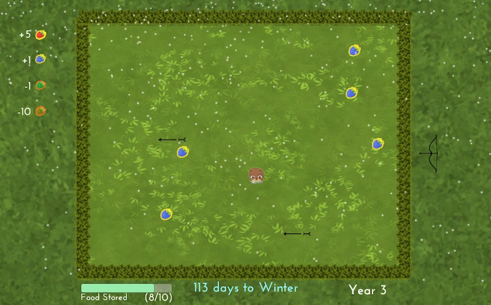
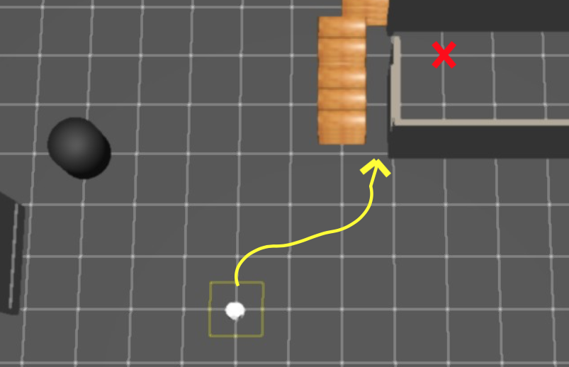
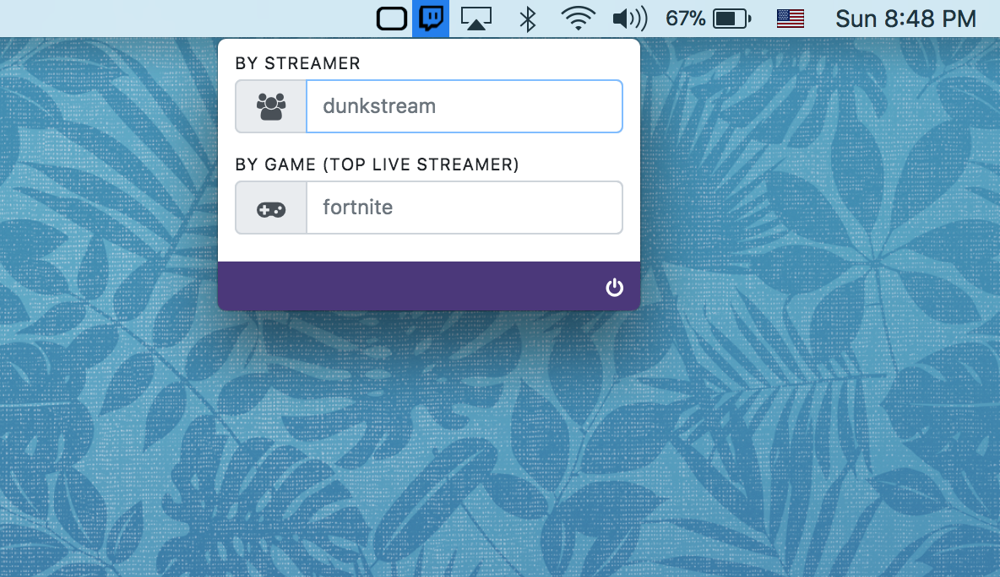
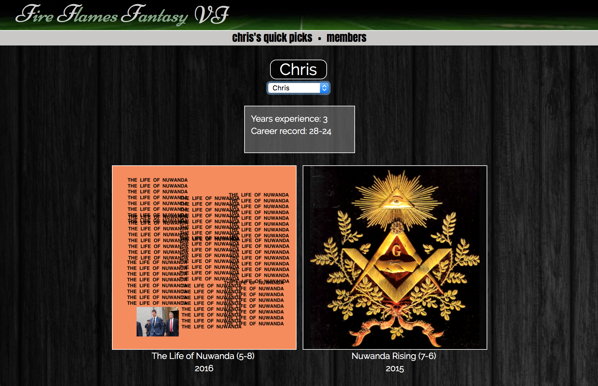
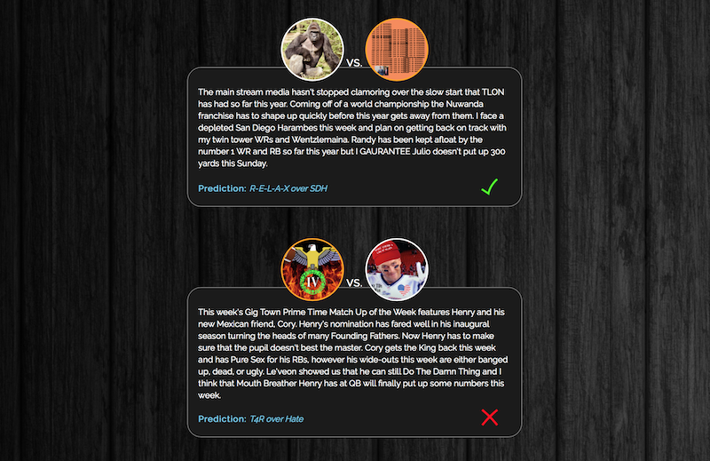

iOS & Android


Aside from the booking and discovery features shared by the website, the native iOS and Android mobile apps afford users to see what shows are happening nearby, be automatically "checked in" when they arrive at a venue, or tip an artist using Apple/Android Pay.
Web Platform


I implemented the GigTown website functionality and design to complete feature parity with the mobile apps, including the landing page, artist signup and management, browsing and submitting to gigs, discovering shows, public artist profiles, and more.
Backend
On the GigTown backend I was for the architecture and upgrading of new and existing data models and indices, as well as the implementation of validations, jobs, webhooks, and more.
Modernistik
Freelance project to create a native Mac/Windows launcher for an MMORPG using Electron and ReactJS.
Habitsourcing
Habitsourcing is an alternative approach to collecting environmental data that harnesses the habit-building practices of millions of people. As a member of the Delta Lab research group at Northwestern with Dr. Haoqi Zhang, Katherine Lin and I had the privilege of researching, developing a prototype app for, and presenting our work in Tokyo at UIST 2016. You can watch the full talk above or see the paper here.
Swift, Python
Games

Next Spring is a Snake-inspired game that tests your reaction speed as a bear trying to collect enough food to survive the winter.
Sisyphus is a game of minigames in the vein of WarioWare, where the user must quickly perform varying tasks to repeatedly push a boulder to new heights.
Unity, C#, JavaScript
Graffiti Eraser
Graffiti Eraser is a computer vision project that utilizes foreground/background recognition and dynamic edge blending to digitally paint over tagged walls and restore them to their initial state. Read here for a brief overview of the methods used.
MATLAB
Rehabilitation Institute of Chicago

The Impairment Controller is a robotics project I was fortunate to work on at the Rehabilitation Institute of Chicago with Professor Brenna Argall. The goal was to implement a wheelchair controller that allows disabled patients full driving control while combating input irregularities such as those stemming from tremor.
C++, ROS
QuickTwitch

QuickTwitch is a minimal menubar app for Mac that gives easy and instant access to Twitch streams. I started this project as a way to get my feet wet with creating Mac apps, specifically menubar ones which I've always found especially useful. As a frequent gamer, I often look to Twitch to preview a game I'm interested in or recently started playing. The "top live streamer" option in this app lets you pop open a popular stream for any game in seconds. After all, this is 2018 and nobody wants to waste time opening a browser when you can go native! Download the latest release.
Electron, Node
Fire Flames Fantasy Football
 
FireFlamesFantasy is a website I created to accompany a long-running fantasy football league of which I am a member. It hosts team profiles including history and statistics that update automatically each week via scraping, and weekly editorial content such as power rankings and matchup predictions, which in turn are automatically assessed for accuracy the following week. While I prefer to demo my work, I'm not linking the site here because I don't censor or curate the content created by other league members...
MongoDB, Express, Angular, Node